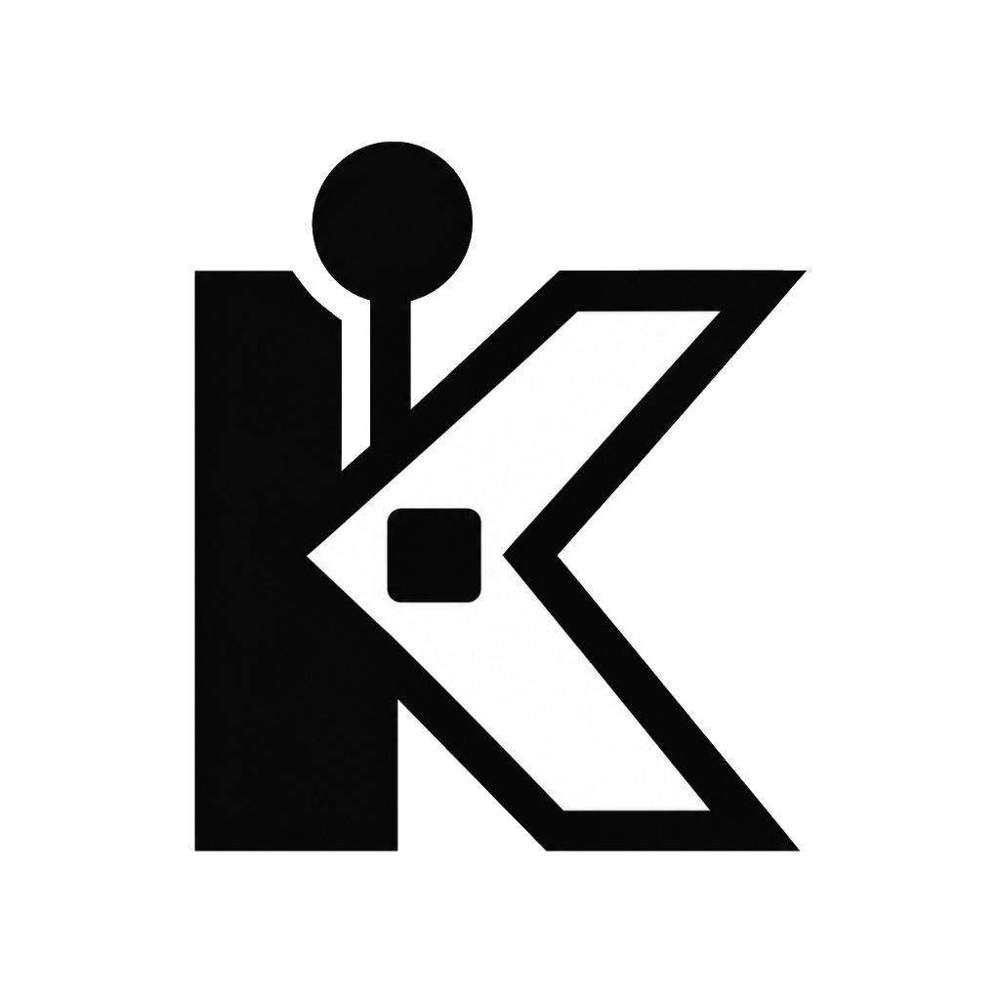

Toute votre arcade.
Une interface épurée.
KaïroOS transforme votre PC Windows en une borne dédiée haut de gamme. Jeux rétro, blockbusters PC, émulateurs et contrôle distant réunis dans une expérience pensée exclusivement pour la manette.
SUPER MARIO WORLD
Le monument intemporel de Shigeru Miyamoto. Traversez Dinosaur Land aux côtés de Yoshi avec une précision de contrôle au pixel près et 96 sorties secrètes.
Vos jeux ne devraient pas ressembler à un casse-tête.
Installer un PC de jeu dans un meuble arcade ou sous une télévision tourne vite à l'enfer administratif. KaïroOS remplace la fragmentation par une pureté totale.
L'enfer de l'émulation éparpillée
8 dossiers différents, fenêtres d'erreur inattendues et souris obligatoire.
Dès qu'un émulateur affiche un pop-up ou plante, obligation de sortir un clavier.
Les boutons s'inversent entre PCSX2, Dolphin et Steam. Le joueur 1 devient joueur 2.
L'architecture d'un système arcade.
Chaque couche a été conçue pour éliminer la friction et garantir une réactivité instantanée.
Bibliothèque Unifiée
Base SQLite locale haute vitesse. Scanne vos disques durs et indexe des milliers de jeux en un clin d'œil.
Orchestrateur d'Émulateurs
Pilote RetroArch, Dolphin, PCSX2 et DuckStation avec les meilleurs arguments de démarrage graphique.
Jeux PC Natifs
Prise en charge directe des exécutables Windows (.exe) et raccourcis Steam sans sous-menus cachés.
Mode Kiosque Pur
Extinction sécurisée du PC d'une simple pression sur la manette et démarrage propre sans bureau Windows.
Tout votre univers au même endroit.
Né pour les boutons d'arcade et les manettes.
Tous les menus, tiroirs de filtres et réglages sont accessibles au stick sans jamais devoir toucher un mulot.
Défilement optique fluide avec inertie et rebond élastique.
Lancer le jeu sélectionné immédiatement en plein écran.
Fermer une modale, annuler une recherche ou revenir au parent.
Raccourci d'urgence : force la fermeture du jeu et revient au menu.
Votre arcade. Votre style.
Basculez entre les agencements officiels conçus avec React 19 et Tailwind CSS.
Kaïro Default Layout
Navigation latérale par catégories et rayonnage fluide de jaquettes.
Shaders sur-mesure, grilles dynamiques, affichage marquee et créations communautaires.
Votre arcade. Au creux de votre main.
Ouvrez le navigateur de votre smartphone sur le réseau Wi-Fi local : KaïroOS héberge automatiquement une Progressive Web App ultralégère pour tout piloter du canapé.
Rapide là où ça compte. Modulaire partout.
Zéro lourdeur d'Electron. KaïroOS repose sur Tauri 2 et un cœur Rust ultra-rapide.
Kaïro UI (React 19)
Composé avec TypeScript et Tailwind CSS. Compositing GPU matériel à 60 ou 120 images par seconde sans micro-saccades.
Tauri 2 Bridge
Harnais WebView2 ultra-léger. Communication zéro-copie avec les APIs système Win32 sans la surcharge mémoire d'un navigateur complet.
Kaïro Core (Rust)
Analyse multi-threadée ultra-rapide avec Rayon, indexation transactionnelle SQLite 3 et supervision des processus en temps réel.
Tout ce que vous devez savoir.
Des réponses claires pour les joueurs et les créateurs de bornes.
Oui, KaïroOS est 100% gratuit et ouvert pour tous les particuliers et passionnés de rétrogaming à domicile. Zéro abonnement, zéro compte obligatoire et zéro publicité.
Le code source est accessible sur GitHub sous licence communautaire non-commerciale. Vos données et habitudes de jeu restent uniquement sur votre propre machine.

Votre arcade. Vos règles.
Téléchargez la version Alpha v0.1.0 dès aujourd'hui ou contribuez au code source sur GitHub. Gratuit, libre et pensé pour le plaisir de jouer.